Kombinatorik & Grundlagen der Wahrscheinlichkeit
Sayma yöntemleri: permütasyon, kombinasyon, çekiliş/şifre modelleri ve temel olasılık hesapları.
En çok tekrar eden sorular
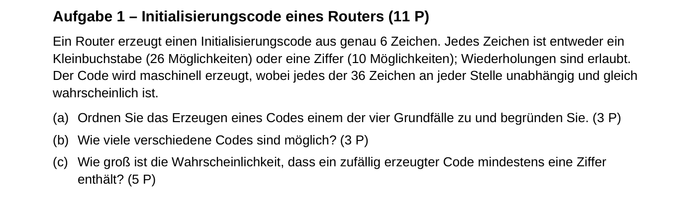
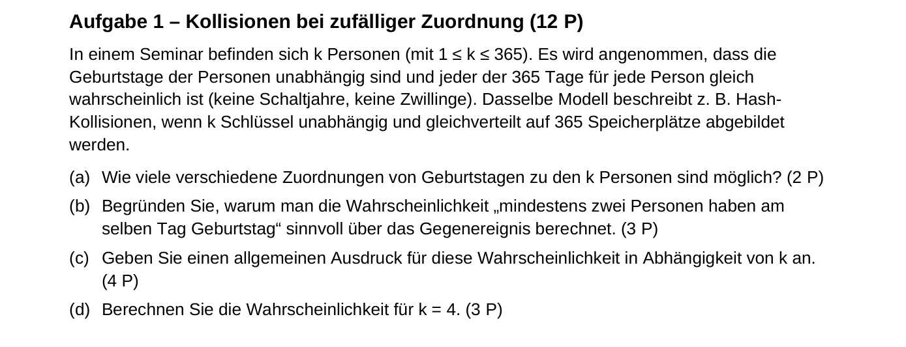
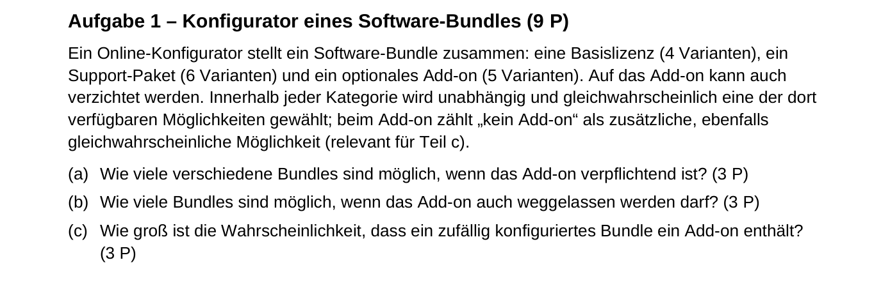
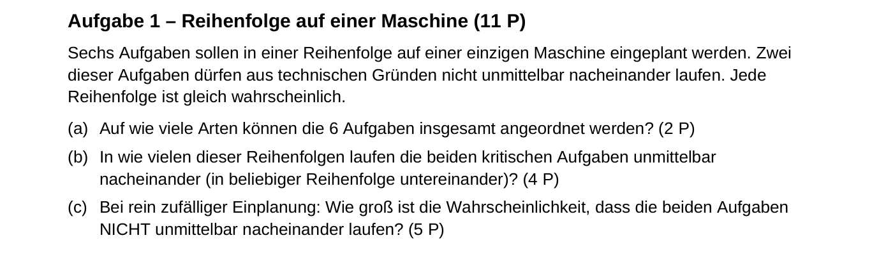
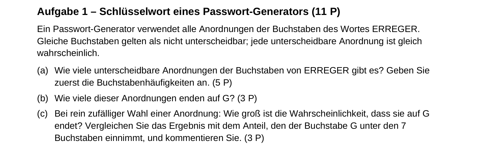
Tüm 23 soru varyantını göster (1 kez görülenler dahil)
| Soru | Puan | Tekrar | Sınavlar |
|---|---|---|---|
| Initialisierungscode eines Routers | 11 P | 2× | K12K15 |
| Kollisionen bei zufälliger Zuordnung | 12 P | 2× | K01K26 |
| Konfigurator eines Software-Bundles | 9 P | 2× | K16K27 |
| Reihenfolge auf einer Maschine | 11 P | 2× | K07K17 |
| Schlüsselwort eines Passwort-Generators | 11 P | 2× | K05K21 |
| Asset-Tags eines IT-Inventars | 10 P | 1× | K20 |
| Aufbau eines Projektteams | 12 P | 1× | K14 |
| Auswahl eines Release-Pakets | 10 P | 1× | K18 |
| Bereitstellung von Cloud-Instanzen | 12 P | 1× | K10 |
| Bewertung bei einem Pitch-Wettbewerb | 11 P | 1× | K11 |
| Bitfolgen eines Sensors | 10 P | 1× | K22 |
| Ein Blatt aus dem Skatspiel | 12 P | 1× | K19 |
| Lieferroboter im Lagergitter | 15 P | 1× | K13 |
| Markenname für ein Start-up | 10 P | 1× | K09 |
| Paarweise Integrationstests | 10 P | 1× | K24 |
| Preisvergabe bei einem Hackathon | 9 P | 1× | K23 |
| Raten in einem Zertifizierungstest | 11 P | 1× | K04 |
| Verlosung von Konferenztickets | 11 P | 1× | K06 |
| Verteilung von Software-Lizenzen | 11 P | 1× | K25 |
| Wann darf man einfach abzählen? | 11 P | 1× | K28 |
| Welches Schema? | 12 P | 1× | K02 |
| Zwei Würfe eines fairen Würfels | 10 P | 1× | K03 |
| Zwei Würfel, zwei Modelle | 12 P | 1× | K08 |
Bedingte Wahrscheinlichkeit, Unabhängigkeit & Bayes
Bedingte Wahrscheinlichkeit, Bayes teoremi, toplam olasılık yasası ve bağımsızlık kontrolleri.
En çok tekrar eden sorular
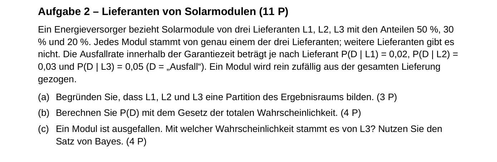
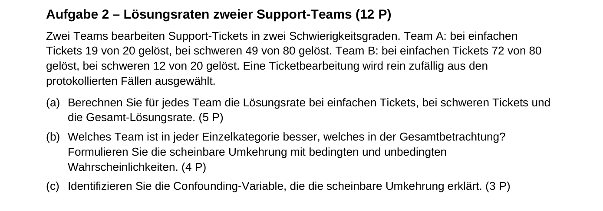
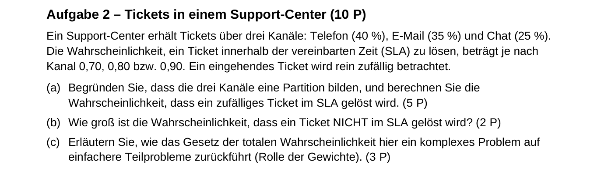
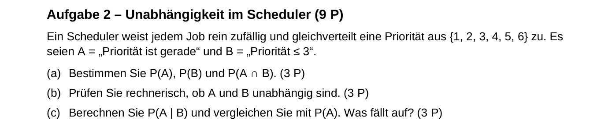
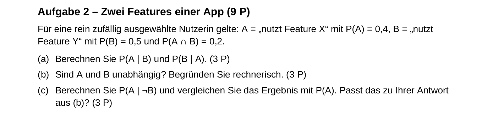
Tüm 23 soru varyantını göster (1 kez görülenler dahil)
| Soru | Puan | Tekrar | Sınavlar |
|---|---|---|---|
| Lieferanten von Solarmodulen | 11 P | 2× | K22K25 |
| Lösungsraten zweier Support-Teams | 12 P | 2× | K20K26 |
| Tickets in einem Support-Center | 10 P | 2× | K04K15 |
| Unabhängigkeit im Scheduler | 9 P | 2× | K05K09 |
| Zwei Features einer App | 9 P | 2× | K23K24 |
| Alarme eines Intrusion-Detection-Systems | 11 P | 1× | K07 |
| Auswahl im Bewerbungsverfahren | 10 P | 1× | K27 |
| Betriebssystem und Absturzhäufigkeit | 9 P | 1× | K01 |
| Bug-Schätzung mit zwei Analysewerkzeugen | 11 P | 1× | K16 |
| Conversion-Funnel einer Kampagne | 10 P | 1× | K02 |
| Ereignisse im Logging-System | 9 P | 1× | K19 |
| Hash-Treffer in der IT-Forensik mit niedriger Basisrate | 10 P | 1× | K14 |
| Health-Check von Serverknoten | 11 P | 1× | K11 |
| Klassifikation anhand eines Merkmals | 9 P | 1× | K28 |
| Newsletter und Kaufverhalten | 10 P | 1× | K21 |
| Redundante Backups | 9 P | 1× | K10 |
| Server unter Last | 9 P | 1× | K12 |
| Streaming-Nutzung | 9 P | 1× | K18 |
| Test von Festplatten | 9 P | 1× | K06 |
| Verfügbarkeit dreier Dienste | 9 P | 1× | K08 |
| Zwei Geräte, mindestens eines mit Android | 10 P | 1× | K03 |
| Zwei Sichtweisen auf Wahrscheinlichkeit | 8 P | 1× | K13 |
| Zwei Zufallszahlengeneratoren | 11 P | 1× | K17 |
Hypothesentests für Mittelwerte (t-Test / z-Test)
Bir örneklemli ortalama testleri: t-Test / z-Test, güven aralıkları, hipotez kurma ve hatalı analiz eleştirisi.
En çok tekrar eden sorular
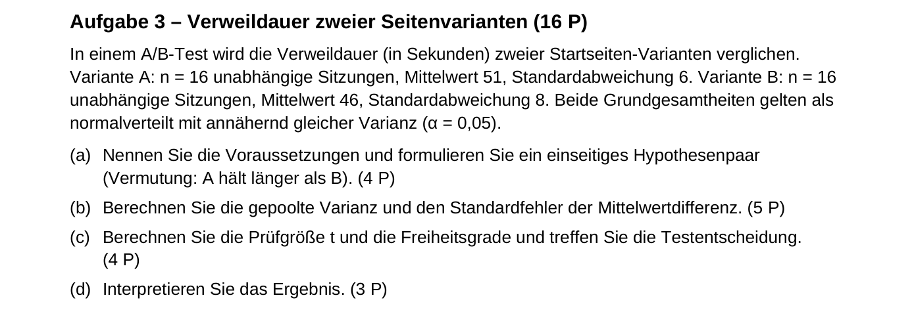
Tüm 27 soru varyantını göster (1 kez görülenler dahil)
| Soru | Puan | Tekrar | Sınavlar |
|---|---|---|---|
| Verweildauer zweier Seitenvarianten | 16 P | 2× | K12K13 |
| Antwortzeit einer API | 16 P | 1× | K11 |
| Antwortzeiten aus Rohdaten | 16 P | 1× | K22 |
| Bearbeitungszeit nach einer Schulung | 16 P | 1× | K06 |
| Bearbeitungszeiten von Support-Tickets | 14 P | 1× | K14 |
| Build-Zeit vor und nach einer Umstellung | 16 P | 1× | K25 |
| Durchlaufzeit nach einer Prozessänderung | 15 P | 1× | K26 |
| Durchsatz zweier Server-Konfigurationen | 17 P | 1× | K21 |
| Eine fehlerhafte Auswertung | 12 P | 1× | K01 |
| Energieverbrauch nach Optimierung | 15 P | 1× | K23 |
| Hintergrund der t-Verteilung | 14 P | 1× | K15 |
| Hypothesen richtig aufstellen | 14 P | 1× | K20 |
| Kalibrierung eines Drucksensors | 13 P | 1× | K05 |
| Konfidenzintervall für die Akkulaufzeit | 15 P | 1× | K28 |
| Konfidenzniveau und Intervallbreite | 14 P | 1× | K19 |
| Ladezeiten vor und nach einem Update (Rohdaten) | 17 P | 1× | K24 |
| Latenz zweier Rechenzentren | 17 P | 1× | K16 |
| Leistung von Solarmodulen | 15 P | 1× | K17 |
| Servertemperatur aus Rohdaten | 15 P | 1× | K04 |
| Taktfrequenz eines Chips | 16 P | 1× | K03 |
| Viele Tests auf denselben Daten | 8 P | 1× | K07 |
| Voraussetzungen, Freiheitsgrade und Vorgehen | 12 P | 1× | K02 |
| Welcher Test passt? | 12 P | 1× | K09 |
| Zwei Compiler-Versionen | 16 P | 1× | K10 |
| Zwei Teams mit ungleichen Streuungen | 16 P | 1× | K18 |
| p-Wert bei einem Speichertest | 14 P | 1× | K27 |
| t-Test oder z-Test? | 14 P | 1× | K08 |
Anteile: Hypothesentest, Konfidenzintervall & Stichprobenumfang
Oran (Anteil) testleri, güven aralıkları ve gerekli örneklem büyüklüğü hesapları.
En çok tekrar eden sorular
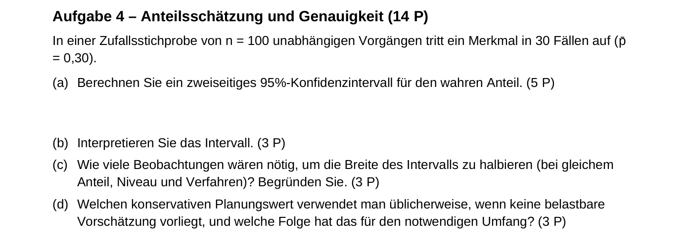
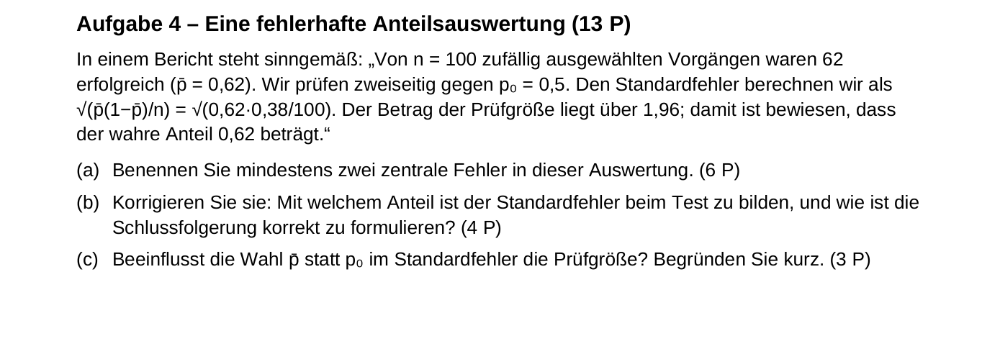
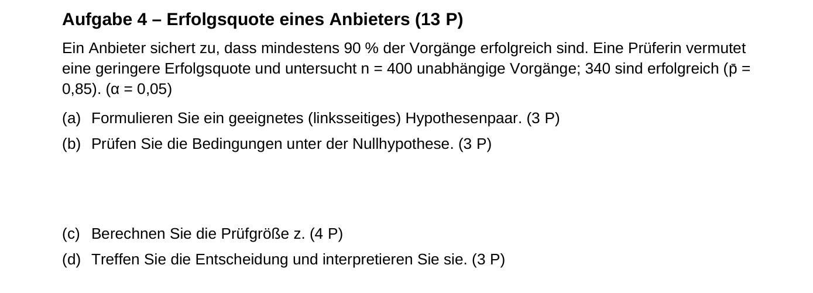
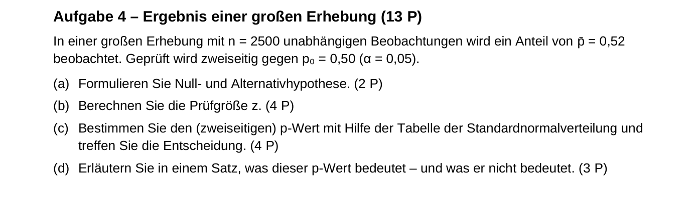
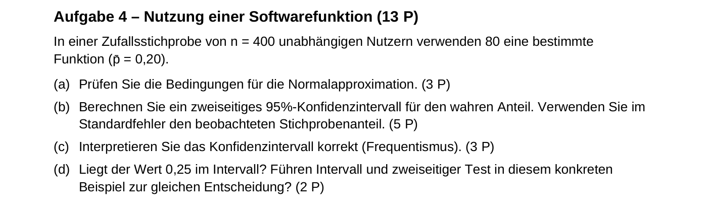
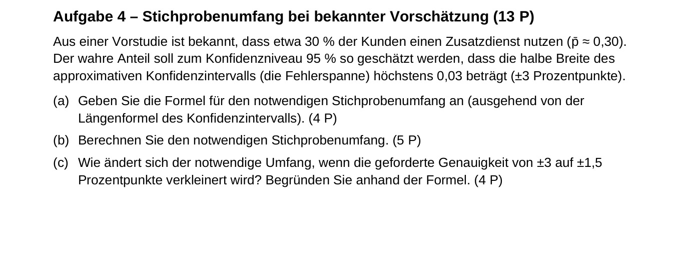
Tüm 22 soru varyantını göster (1 kez görülenler dahil)
| Soru | Puan | Tekrar | Sınavlar |
|---|---|---|---|
| Anteilsschätzung und Genauigkeit | 14 P | 2× | K05K20 |
| Eine fehlerhafte Anteilsauswertung | 13 P | 2× | K01K21 |
| Erfolgsquote eines Anbieters | 13 P | 2× | K16K19 |
| Ergebnis einer großen Erhebung | 13 P | 2× | K09K27 |
| Nutzung einer Softwarefunktion | 13 P | 2× | K07K18 |
| Stichprobenumfang bei bekannter Vorschätzung | 13 P | 2× | K06K14 |
| Behandlungserfolg in zwei Gruppen | 14 P | 1× | K13 |
| Defekte Bauteile | 9 P | 1× | K28 |
| Erfolgsanteile zweier Gruppen | 14 P | 1× | K17 |
| Historische Fehlerrate in der Fertigung | 13 P | 1× | K10 |
| Klickrate einer neuen Gestaltung | 13 P | 1× | K24 |
| Konfidenzintervall richtig deuten | 10 P | 1× | K04 |
| Marktanteil eines neuen Online-Dienstes | 11 P | 1× | K11 |
| Planung einer Umfrage | 9 P | 1× | K02 |
| Signifikanz und Relevanz bei großem n | 12 P | 1× | K22 |
| Test und Konfidenzintervall im Vergleich | 14 P | 1× | K12 |
| Verbreitung von Smart Metern | 13 P | 1× | K23 |
| Vergleich zweier Conversion-Raten | 13 P | 1× | K03 |
| Voraussetzungen und Grenzen der Approximation | 11 P | 1× | K08 |
| Zustimmung in einer Umfrage | 14 P | 1× | K15 |
| Zwei Berechnungen eines Standardfehlers | 12 P | 1× | K26 |
| Zwei Verfahren zum Vergleich von Anteilen | 12 P | 1× | K25 |
Fehler 1. und 2. Art / Testlogik
1. ve 2. tip hata, test mantığı, H0/H1 formülasyonu ve gerçek hayat analojileri (mahkeme, tıbbi tarama vb.).
En çok tekrar eden sorular
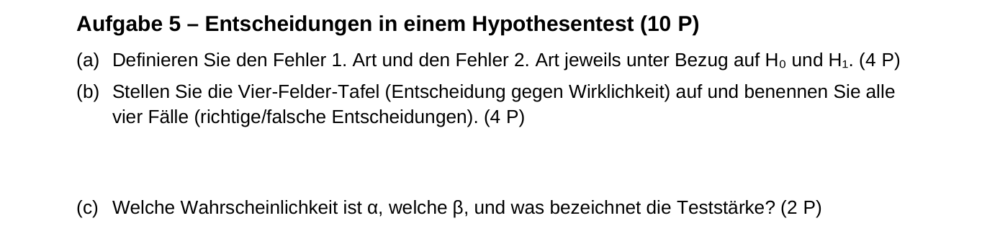
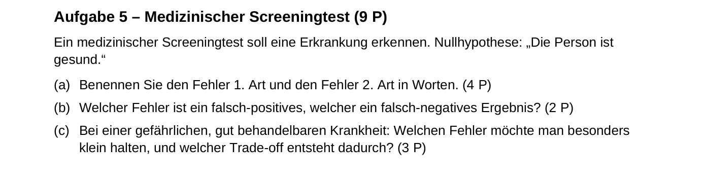
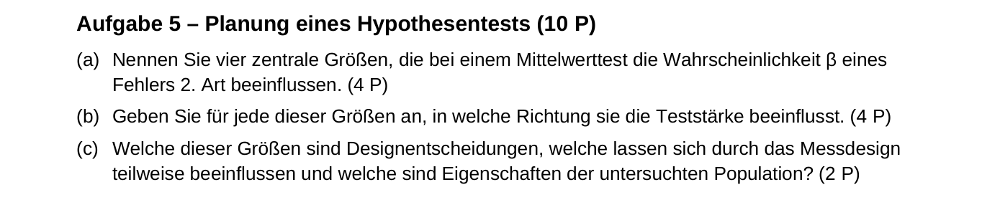
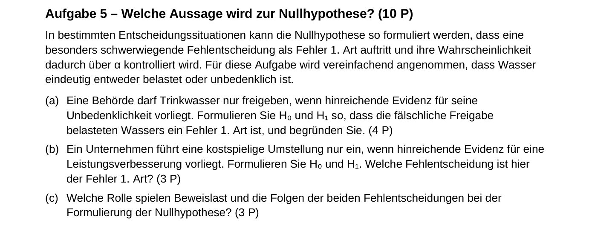
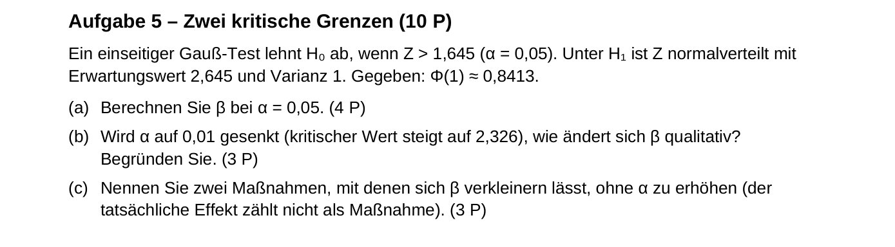
Tüm 23 soru varyantını göster (1 kez görülenler dahil)
| Soru | Puan | Tekrar | Sınavlar |
|---|---|---|---|
| Entscheidungen in einem Hypothesentest | 10 P | 2× | K07K15 |
| Medizinischer Screeningtest | 9 P | 2× | K05K09 |
| Planung eines Hypothesentests | 10 P | 2× | K12K27 |
| Welche Aussage wird zur Nullhypothese? | 10 P | 2× | K04K06 |
| Zwei kritische Grenzen | 10 P | 2× | K18K24 |
| Analogie zur Rechtsprechung | 11 P | 1× | K02 |
| Aussagen zu Fehlern und Teststärke prüfen | 9 P | 1× | K25 |
| Auswertung einer Studie | 9 P | 1× | K21 |
| Auswertung eines nicht signifikanten Ergebnisses | 8 P | 1× | K19 |
| Betrugserkennung | 12 P | 1× | K28 |
| Die beiden Verteilungen skizzieren | 11 P | 1× | K14 |
| Ein rechtsseitiger Gauß-Test | 10 P | 1× | K20 |
| Ergebnisse wiederholter Tests | 10 P | 1× | K01 |
| Fehlerarten beim zweiseitigen Test | 8 P | 1× | K03 |
| Klassifikator: Fehlerraten | 10 P | 1× | K10 |
| Planung einer größeren Studie | 9 P | 1× | K11 |
| Qualitätskontrolle einer Charge | 10 P | 1× | K16 |
| Seltene Ereignisse und Fehlalarme | 9 P | 1× | K22 |
| Spam-Filter | 9 P | 1× | K23 |
| Test entwerfen und Fehler kontrollieren | 10 P | 1× | K08 |
| Viele Studien ohne echten Effekt | 8 P | 1× | K26 |
| Wahl des Signifikanzniveaus | 8 P | 1× | K17 |
| Zusammenspiel der beiden Fehlerwahrscheinlichkeiten | 8 P | 1× | K13 |
Teststärke (Power) & Stichprobenumfangsplanung
Teststärke (Power) hesapları ve örneklem büyüklüğü planlaması.
En çok tekrar eden sorular
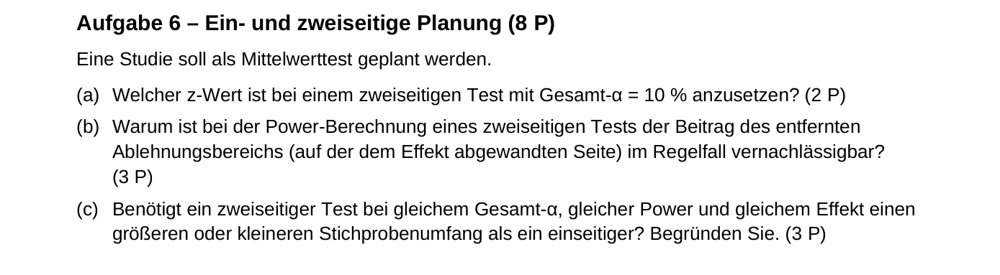
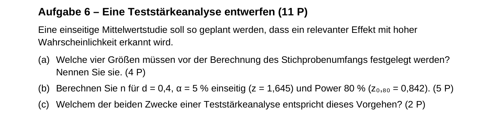
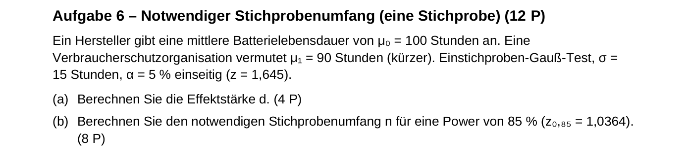
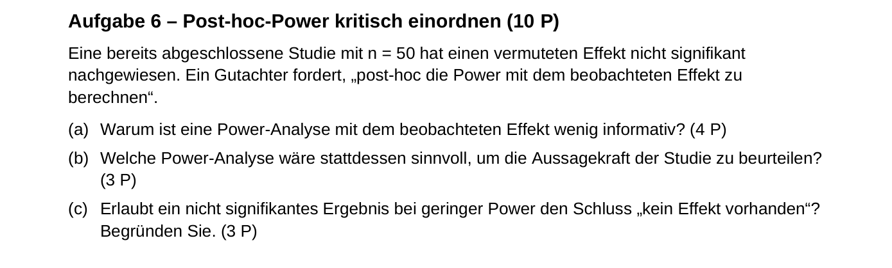
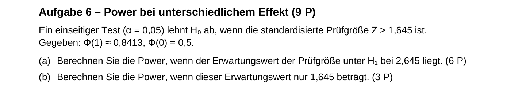
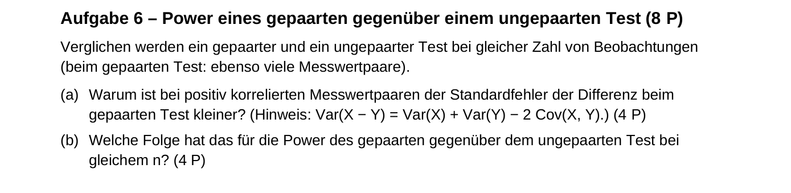
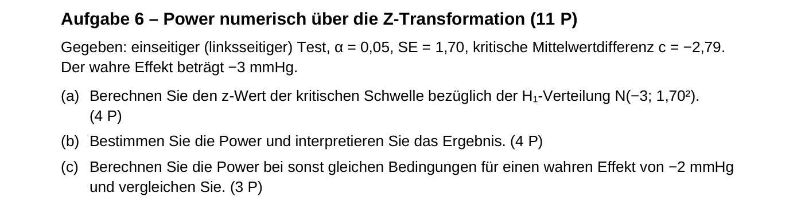
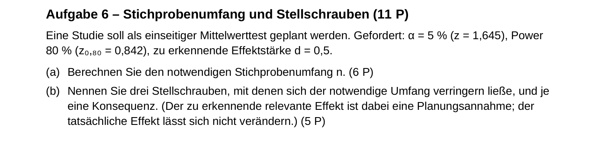
Tüm 20 soru varyantını göster (1 kez görülenler dahil)
| Soru | Puan | Tekrar | Sınavlar |
|---|---|---|---|
| Ein- und zweiseitige Planung | 8 P | 2× | K16K20 |
| Eine Teststärkeanalyse entwerfen | 11 P | 2× | K09K25 |
| Notwendiger Stichprobenumfang (eine Stichprobe) | 12 P | 2× | K08K19 |
| Post-hoc-Power kritisch einordnen | 10 P | 2× | K07K14 |
| Power bei unterschiedlichem Effekt | 9 P | 2× | K22K27 |
| Power eines gepaarten gegenüber einem ungepaarten Test | 8 P | 2× | K06K15 |
| Power numerisch über die Z-Transformation | 11 P | 2× | K10K13 |
| Stichprobenumfang und Stellschrauben | 11 P | 2× | K01K17 |
| Begriff und formale Definition | 11 P | 1× | K28 |
| Effektstärke und ihr Einfluss auf die Power | 9 P | 1× | K21 |
| Fallzahl bei höherer Power | 10 P | 1× | K18 |
| Gepoolte Standardabweichung für d | 9 P | 1× | K12 |
| Minimal erkennbarer Effekt | 10 P | 1× | K11 |
| Notwendiger Stichprobenumfang (zwei Gruppen) | 11 P | 1× | K02 |
| Power als Fläche skizzieren | 11 P | 1× | K24 |
| Power eines Zwei-Gruppen-Tests berechnen | 11 P | 1× | K04 |
| Power und β verknüpfen | 12 P | 1× | K26 |
| Teststärke beim Anteilstest | 11 P | 1× | K23 |
| Zwei Zwecke einer Teststärkeanalyse | 12 P | 1× | K03 |
| Zweiseitige gegen einseitige Fallzahl | 10 P | 1× | K05 |
Lineare Regression
Basit ve çoklu doğrusal regresyon: katsayı yorumlama, R², artık (residual) analizi, dummy değişkenler.
En çok tekrar eden sorular
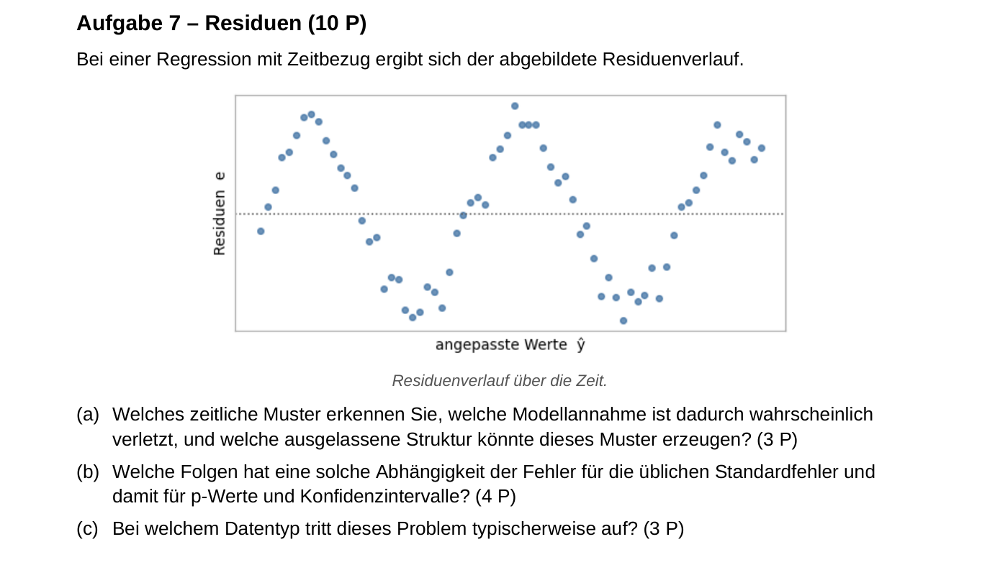
Tüm 27 soru varyantını göster (1 kez görülenler dahil)
| Soru | Puan | Tekrar | Sınavlar |
|---|---|---|---|
| Residuen | 9–10 P | 2× | K13K26 |
| Annahmen der linearen Regression | 13 P | 1× | K04 |
| Bestimmtheitsmaß interpretieren | 9 P | 1× | K21 |
| Binäre Dummy-Variable | 14 P | 1× | K02 |
| Brände in einer Stadt | 13 P | 1× | K25 |
| Der Steigungsschätzer als Zufallsvariable | 13 P | 1× | K17 |
| Dummy-Variablen interpretieren | 14 P | 1× | K24 |
| Duschdauer und Wasserverbrauch: manuelle Schätzung | 16 P | 1× | K09 |
| Ein geschätzter Steigungskoeffizient | 11 P | 1× | K19 |
| Ein unauffälliger Residuenplot | 13 P | 1× | K08 |
| Eine fehlerhafte Regressionsauswertung | 14 P | 1× | K03 |
| Einheiten und Standardisierung | 13 P | 1× | K06 |
| Freiheitsgrade und Stichprobengröße | 9 P | 1× | K12 |
| Hohe Anpassung, auffällige Residuen | 16 P | 1× | K18 |
| Kalorien und Kohlenhydrate: R-Ausgabe deuten | 12 P | 1× | K15 |
| Lernzeit und Klausurergebnis | 14 P | 1× | K22 |
| Linearität in den Parametern | 13 P | 1× | K20 |
| Mehrere Dummy-Variablen interpretieren | 14 P | 1× | K11 |
| Mehrfachregression: Prognose mit gegebenen Variablen | 16 P | 1× | K14 |
| Niederschlagsmenge: R-Ausgabe lesen | 12 P | 1× | K23 |
| Sportstunden und Gesundheit | 14 P | 1× | K10 |
| Steigung interpretieren und prognostizieren | 14 P | 1× | K27 |
| Vier Diagnosegrafiken | 14 P | 1× | K01 |
| Zwei Intervalle bei festem x | 13 P | 1× | K16 |
| Zwei Modelle für dieselbe Zielgröße | 15 P | 1× | K28 |
| Zwei Modelle im Vergleich | 13 P | 1× | K05 |
| Zwei stark korrelierte Prädiktoren | 16 P | 1× | K07 |
Gemischte Grundlagenaufgaben (Verteilungen, Kennzahlen, Mengenlehre)
Her sınavda 2 farklı alt konudan oluşan karışık temel sorular: dağılımlar, beklenen değer/varyans, tanımlayıcı istatistik, küme işlemleri.
Bu görevin başlığı ("Gemischte Aufgaben") her sınavda aynı; asıl çeşitlilik alt sorularda. Bu yüzden burada alt sorular listeleniyor.
En çok tekrar eden alt sorular
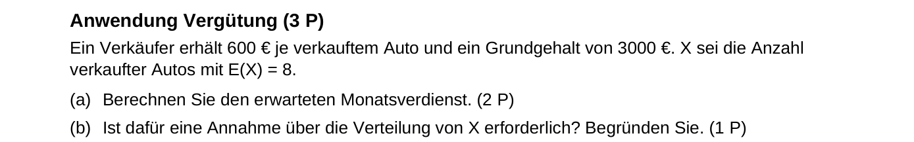
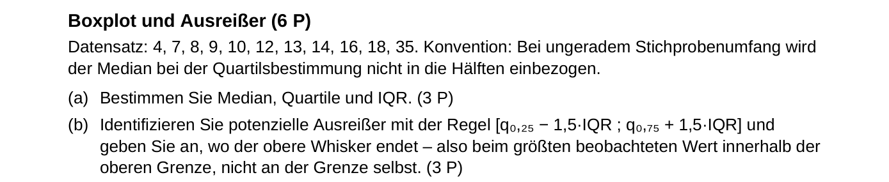
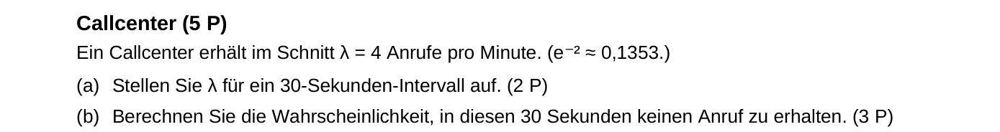
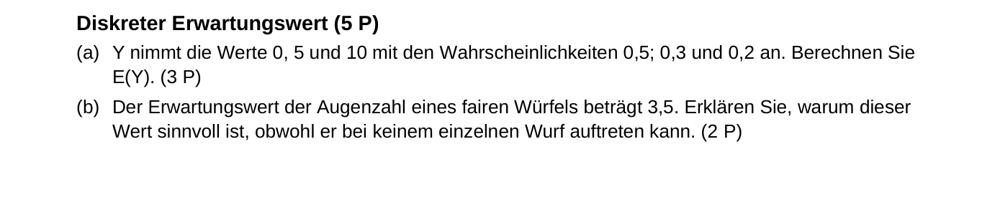
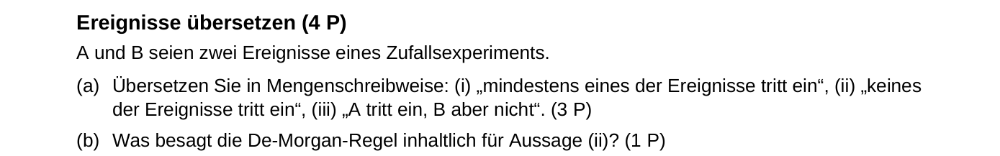
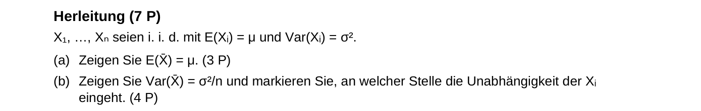
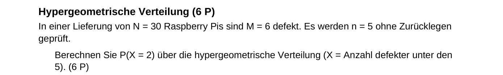
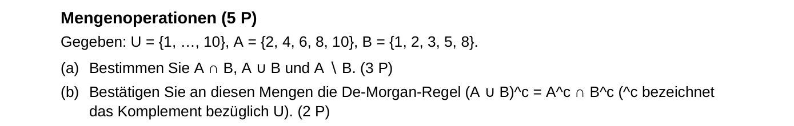
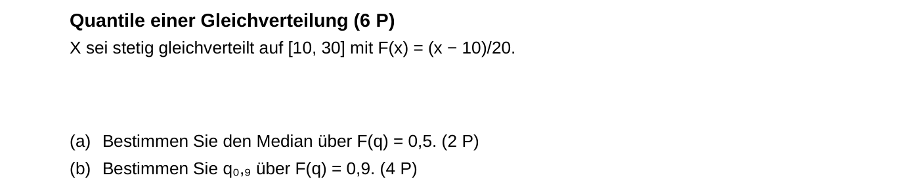
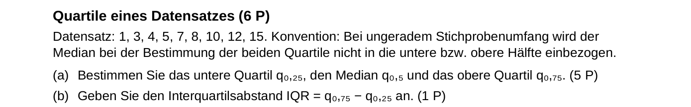
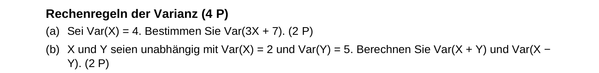
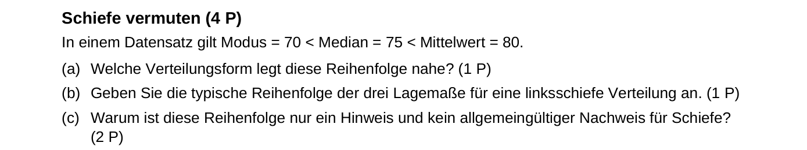
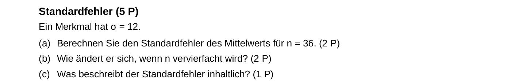
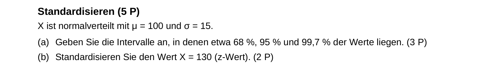
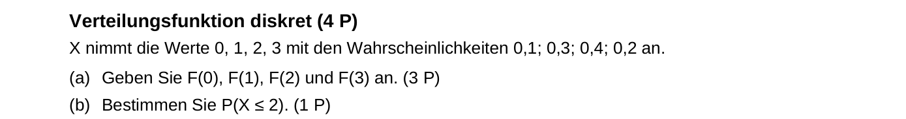
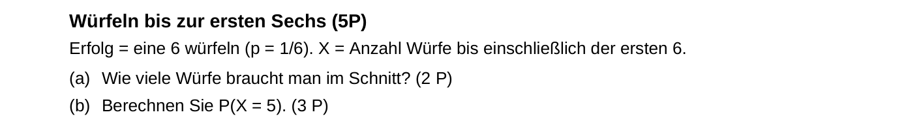
Tüm 35 alt soru varyantını göster (1 kez görülenler dahil)
| Soru | Puan | Tekrar | Sınavlar |
|---|---|---|---|
| Anwendung Vergütung | 3 P | 2× | K14K22 |
| Boxplot und Ausreißer | 6 P | 2× | K05K16 |
| Boxplots vergleichen | 3 P | 2× | K24K28 |
| Callcenter | 5 P | 2× | K25K27 |
| Dichte gegeben | 4 P | 2× | K13K16 |
| Diskreter Erwartungswert | 5 P | 2× | K04K21 |
| Ereignisse übersetzen | 4 P | 2× | K01K24 |
| Herleitung | 7 P | 2× | K09K12 |
| Hypergeometrische Verteilung | 6 P | 2× | K15K28 |
| Linearität anwenden | 2 P | 2× | K10K17 |
| Mengenoperationen | 5 P | 2× | K06K13 |
| Notrufe | 5 P | 2× | K02K20 |
| Quantile einer Gleichverteilung | 6 P | 2× | K15K27 |
| Quartile eines Datensatzes | 6 P | 2× | K04K21 |
| Rechenregeln der Varianz | 4 P | 2× | K03K19 |
| Schiefe vermuten | 4 P | 2× | K07K22 |
| Standardfehler | 5 P | 2× | K06K11 |
| Standardisieren | 5 P | 2× | K08K23 |
| Verteilungsfunktion diskret | 4 P | 2× | K10K25 |
| Würfeln bis zur ersten Sechs | 5 P | 2× | K11K23 |
| Achtseitiger Würfel | 4 P | 1× | K26 |
| Ampeln | 6 P | 1× | K05 |
| Bauteil | 3 P | 1× | K08 |
| Drei Funktionen abgrenzen | 5 P | 1× | K19 |
| Drei Lagemaße berechnen | 4 P | 1× | K12 |
| Geeignetes Lagemaß wählen | 3 P | 1× | K09 |
| Mittelwert bei Ordinaldaten | 3 P | 1× | K20 |
| Mittelwert vs. Median | 4 P | 1× | K18 |
| Mittelwert über Median | 3 P | 1× | K14 |
| Qualitätskontrolle | 6 P | 1× | K01 |
| Server | 4 P | 1× | K26 |
| Skalen zuordnen | 4 P | 1× | K18 |
| Stetiger Erwartungswert | 5 P | 1× | K07 |
| Suchanfrage | 4 P | 1× | K03 |
| Ziehungsverfahren beurteilen | 5 P | 1× | K17 |